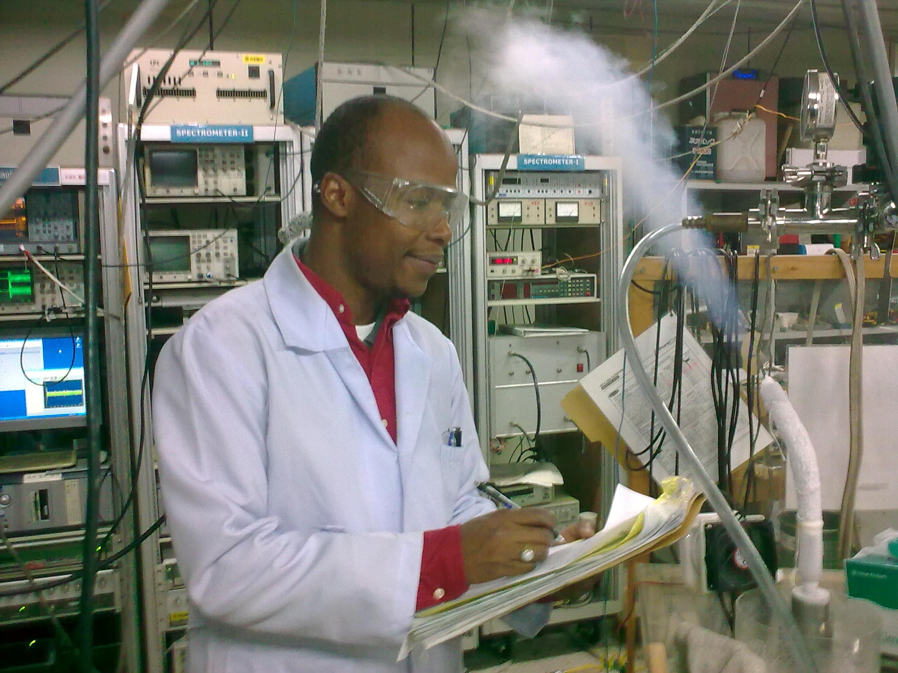

About me
 Hi there 👋, 안녕하세요?
I am Bassirou a Senegalese living in Korea.
은자이 바시루 입니다.
Experiences
- Basic sciences (physics, chemistry, mathematics): solid foundations
- Computational Sciences: modeling and simulation of complex dynamical systems (classical solid or fluid bodies and quantum particles or waves) with numerical methods for algebrization and discretizatiion of the differential equation based- models.
- Data processing and analysis: using machine and deep learning dimensionality reduction and clustering methods, specially, SVD, PCA techniques and Kohonen SOM neural networks.
- Communication Systems: RF and microwave communication, RF and microwave electrical and electronic devices, control systems, analog and digital signal processing
- Material Sciences: functional materials (dielectrics, semiconductors, superconductors and magnetic materials)
- Device Physics: CMOS devices from functional materials
- Characterization Tools: principle, instrumentations, measurement procedures for spectroscopy (Nuclear Magnetic Resonance), and diffraction (X-ray diffraction)
- Research: procedures, laboratory safeties and policies
- Programming: algorithms, data structures, languages, libraries and coding.
Skills
- Material simulation using quantum chemistry methods and AI enhancement for electronic, molecular and crystal structure, synthesis, local structural & dynamical characterization with NMR and X-ray
- Devices: RF and microwave devices (L-networks, transmission lines, mixers, filters) design and analysis using EDA schematic editors and electromagnetic simulation softwares (LTspice, easyEDA, Matlab, Simulink, TinkerCad, Fritzing, CST Studio, Autodesk Circuits, HFSS, Altair Feko) and fabrication
- Devices: CMOS devices simulation of quantum transport in diodes, quantum wells, transistors, using softwares with built-in numerical solvers (nextnano, NESS, FEnICS, Elmer, COMSOL)
- NMR: Solid-state NMR experiment procedures, signal and resolution enhancements
- Signal Processing : NMR analog and digital signal processing
- Control Systems : Controller design, NMR auto tune/match as hobby projects.
- Data Processing and Analysis: NMR data processing for structural and motional analysis using formula calculation, regression methods, quantum chemistry first-principle methods, machine learning methods.
- Coding: with Matlab, Simulink/ Python/ C++/ C / C# / Fortran / Java / Markups: HTML, LaTeX, Markdown /Git
- Teaching : Physics, Mathematics, Communication Systems, a bit of Chemistry and Coding.
- Field Applicaion Engineering: technical sales, install, maintenance, support.
Interests
- Quantum Computing:
-- Algorithms and circuits for quantum computation, error correction, quantum machine learning
-- Hardware development for spin qubit decoherence and two-qubits operation challenges
- Neuromorphic Computing: Ferroelectric-based synaptic devices.